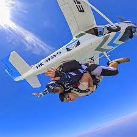
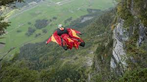
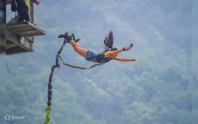
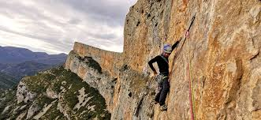

Intro
El turismo extremo invita a los viajeros a ir más allá de lo convencional y
experimentar la adrenalina en su máxima expresión. Desde deportes de aventura
en paisajes imponentes hasta actividades que desafían los límites físicos
y mentales, esta forma de turismo combina emoción, naturaleza y descubrimiento.
Perfecto para quienes buscan salir de la rutina, el turismo extremo transforma
cada destino en una oportunidad para vivir experiencias únicas e inolvidables.
Misión
Brindar experiencias de turismo extremo seguras, innovadoras y llenas
de adrenalina, conectando a los viajeros con la naturaleza y ofreciendo
actividades que despierten su espíritu aventurero. Nos enfocamos en
garantizar calidad, responsabilidad ambiental y un servicio excepcional
que transforme cada aventura en un recuerdo inolvidable.
Visión
Ser la plataforma líder en turismo extremo en Latinoamérica, reconocida
por su excelencia, compromiso con la sostenibilidad y capacidad para
inspirar a las personas a explorar el mundo desde una perspectiva más audaz.
Aspiramos a expandir nuestras experiencias y alianzas, promoviendo un
turismo responsable que impulse el desarrollo local y la cultura de la aventura..

Paracaidismo
El paracaidismo es una actividad extrema que consiste en lanzarse desde
un avión o una plataforma elevada y descender a tierra utilizando un
paracaídas para controlar la caída. Esta experiencia ofrece una combinación
única de adrenalina, libertad y vistas panorámicas impresionantes.
Los participantes pueden optar por saltos en tándem con un instructor
experimentado o realizar saltos en solitario si cuentan con la certificación adecuada.

Rafting
El rafting es una actividad de aventura que consiste en descender ríos
de aguas bravas utilizando una balsa inflable. Es una experiencia
emocionante que combina trabajo en equipo, habilidades de navegación
y la adrenalina de enfrentar rápidos y corrientes turbulentas.
El rafting se practica en diferentes niveles de dificultad, desde
ríos tranquilos hasta desafiantes tramos con rápidos intensos,
lo que lo convierte en una opción popular para los amantes de la aventura y la naturaleza.

Traje de alas
El vuelo con traje de alas, también conocido como wingsuit flying,
es una actividad extrema que permite a los aventureros planear
por el aire utilizando un traje especialmente diseñado con alas
entre los brazos y las piernas. Esta experiencia ofrece una sensación
única de vuelo libre, combinando la emoción del paracaidismo con
la habilidad de controlar el descenso y la dirección del vuelo.
Los practicantes suelen lanzarse desde acantilados, montañas o
aviones, y requieren entrenamiento especializado para garantizar
la seguridad durante la actividad.

Bungee jumping
El bungee jumping es una actividad extrema que consiste en lanzarse
desde una altura considerable, como un puente o una plataforma,
mientras se está sujeto por una cuerda elástica atada a los tobillos
o al cuerpo. Esta experiencia ofrece una descarga intensa de adrenalina
al experimentar la caída libre seguida de un rebote controlado.
El bungee jumping es popular entre los amantes de la aventura y aquellos
que buscan desafiar sus límites físicos y mentales en un entorno seguro y supervisado.

Escalada libre en roca
La escalada libre en roca es una actividad extrema que implica ascender
formaciones rocosas utilizando únicamente la fuerza física y la técnica,
sin el uso de equipo de protección adicional más allá del calzado y la
ropa adecuada. Esta modalidad de escalada se centra en la habilidad del
escalador para encontrar y utilizar las características naturales de la
roca, como grietas, salientes y fisuras, para progresar hacia la cima.
La escalada libre requiere un alto nivel de destreza, concentración y
resistencia física, y es apreciada por aquellos que buscan una conexión
directa con la naturaleza y un desafío personal.